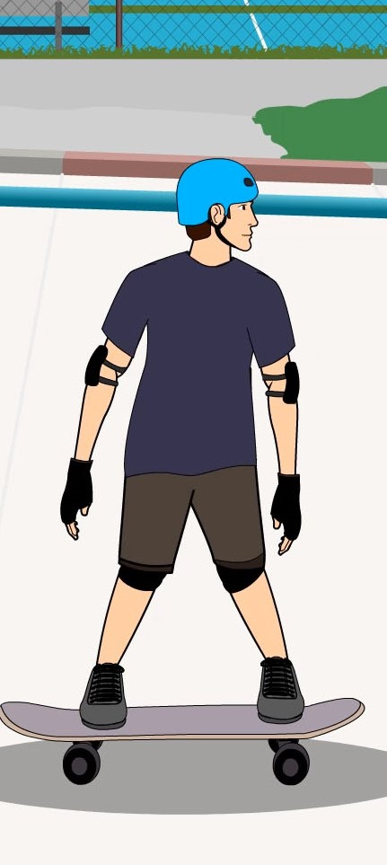

Home
Step 1
Step 2
Step 3
Step 4
Step 4

Finally postion your feet in a solid stance in order to land with good balance. This will give a "clean" ollie, if you are off balance and it's noticeable your trick turns out to be "sketchy".
Now all that is left is good practice and perseverance.